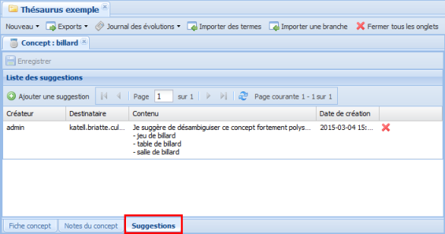
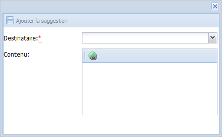
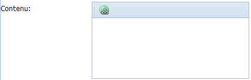
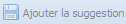

Suggestions
Suggestion ?
ConceptSuggestions⚓
Des suggestions peuvent être rédigées, sur les Concepts et les Termes, par un utilisateur d'un vocabulaire à destination d'un administrateur ou responsable opérationnel de ce vocabulaire.
RéglementaireOù les trouver ?⚓
Les suggestions sont accessibles de deux manières, selon votre profil utilisateur :
Tous les utilisateurs d'un vocabulaire peuvent accéder aux suggestions d'un élément (
ConceptouTerme) depuis l'ongletSuggestionsde l'élément en question :L'administrateur général et les responsables opérationnels du vocabulaire retrouvent les suggestions qui leurs sont adressées grâce au bouton
Suggestions, en haut à droite de l'application. Ces suggestions, dont ils sont les destinataires, s'affichent alors dans l'ongletMes suggestions:
Ajout de Suggestions
ProcédureAjouter une Suggestion⚓
RemarqueRemarque⚓
Cette procédure explique à la fois comment ajouter une suggestion à un Concept et un Terme.
Sélectionnez l'onglet
Suggestionsen bas de l'élément actif (ConceptouTerme).La liste des suggestions de l'élément s'affiche dans la zone d'édition du vocabulaire.
Cliquez sur le bouton

Ajouter une suggestion.La fenêtre de création d'une suggestion s'affiche.

Complétez les champs de cette fenêtre puis cliquez sur
Ajouter la suggestion.AttentionImportant⚓
Les champs suivis d'un astérisque rouge sont obligatoires.
ComplémentEn savoir plus...⚓
Pour en savoir plus sur les champs de cette fenêtre : Édition des suggestions
La suggestion est créée et ajoutée à la liste des suggestions de l'élément (
ConceptouTerme).Pour son destinataire (administrateur du vocabulaire ou responsable opérationnel), elle est aussi accessible depuis le bouton
Suggestionsen haut à droite de la fenêtre Ginco.
Édition des Suggestions
ÉcranÉditer les suggestions⚓
RéglementaireAfficher les Suggestions⚓
Il existe plusieurs manières d'accéder à la fenêtre d'édition d'une suggestion :
Lors de l'ajout d'une nouvelle suggestion ;
Depuis l'onglet
Suggestionsd'unConceptou d'unTerme(en double-cliquant sur une ligne dans la rubriqueListe des suggestions) ;Depuis l'onglet
Mes suggestions, accessible grâce au boutonSuggestions, où l'administrateur général et les responsables opérationnels du vocabulaire retrouvent les suggestions dont ils sont les destinataires (en double-cliquant sur une ligne de cet onglet).
AttentionImportant⚓
Les champs suivis d'un astérisque rouge sont obligatoires.
- 1 Destinataire
Sélectionnez dans la liste déroulante le destinataire de la suggestion.
RemarqueRemarques⚓
La liste des destinataires propose l'ensemble des administrateurs et des responsables opérationnels du vocabulaire.
Un administrateur ou responsable opérationnel retrouve l'ensemble des suggestions qui lui sont adressées dans l'onglet
Mes suggestions, accessible grâce au boutonSuggestions, en haut à droite de l'application.
- 2 Contenu
Saisissez le contenu rédactionnel de la suggestion.
Pour ajouter des liens externes (vers une URL, une adresse courriel...) , sélectionnez un (ou plusieurs) mot et cliquez sur le bouton .
- 3 Ajouter la suggestion
Cliquez sur le bouton
Ajouter la suggestionpour la mettre à jour parmi la liste des suggestions.Cliquez sur le bouton
Enregistrerde l'élément (ConceptouTerme) pour sauvegarder vos modifications.